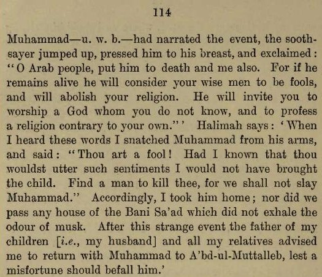
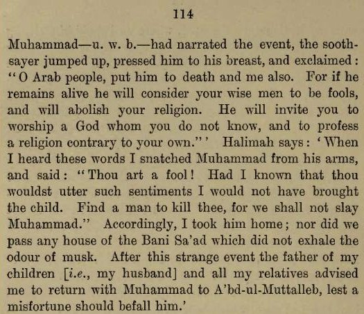
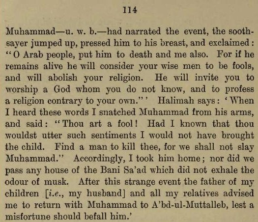
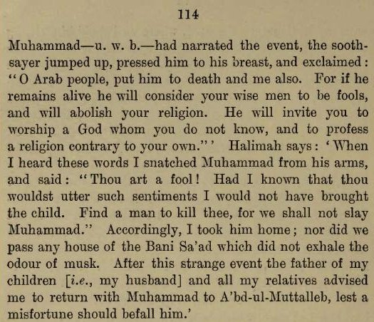

Halimah dit qu'il avait 2 frères de lait qui partaient tous les jours dans le désert pour le pâturage des moutons, et
que lorsque sa seigneurie avait 3 ans il lui dit : Comment se fait-il que je n'aie
pas vu mes frères ces 2 jours ?
Elle répondit : Dans la journée ils font pâturer les moutons
. Il demanda
à nouveau : Pourquoi est-ce que tu ne m'a pas envoyé avec eux ?
Elle répondit : Sans doute voudrais-tu être
en leur compagnie
. En conséquence, elle peignit ses cheveux le matin suivant, inséra du collyre dans ses yeux
bénis, l'habilla d'une robe, et attacha une chaîne de coquilles de Yaman autour de sa nuque bénie pour conjurer le
mauvais œil ; mais il la déchira immédiatement, la jetta au loin, et dit : Celui qui est mon gardien sera avec moi
!
L'envoyant s'éloigner avec ses frères [de lait], elle les enjoint de prendre soin de lui, mais vers midi son fils Zobeir arriva en courant en grande détresse et baigné de sueur, s'exclamant :
Oh mère, sauve Mohammed — u. w. b. — mais je pense que tu ne pourras pas le
rejoindre
. Elle demanda ce qui s'était passé, et il continua : 2 hommes, vêtus de vert, sont arrivés du ciel,
et nous l'ont pris depuis le sommet de la montagne, ont ouvert son abdomen, et ils sont toujours avec lui
.
Halimah dit : Moi, mon mari, et plusieurs femme de ma tribu, courûrent helter-skelter à la prairie, et le vire se
tenant au sommet de la montagne, regardant vers les cieux. Mon mari lui demanda ce qui s'était passé, et il répondit
ainsi : "2 hommes sont descendus de l'atmosphère, ont apporté un vase rempli d'eau de neige, m'ont allongé, ont
ouvert mon abdomen, et ont ouvert ma poitrine. Ils en ont pris un petit grain noir, l'ont lavé avec l'eau de neige,
et l'on rempli de lumière. Puis ils ont passé leurs mains sur mon corps, où il redevint comme il était avant.
A
propos de ce sujet il existe aussi une tradition où Halimah dit : Lorsque mon fils Zobeir m'informa que 2 hommes
avaient pris Mohammed à la montagne, et avaient ouvert sa poitrine, j'ai
immédiatement couru avec mon mari à l'endroit, où nous le vîment assis et regardant alentours, et lorsque ses yeux
se posèrent sur moi il sourit. J'embrassais sa tête et ses yeux, disant : "Puisse ma vie être sacrifiée pour toi ;
dis-moi ce qui est arrivé." Il rejoignit : "Je me tenais avec mes frères, lorsque tout d'un coup 3
— mais selon
une autre tradition 2 — hommes firent leur apparition, habillés de vêtements blancs. L'un d'entre eux avait une
cruche d'argent, et l'autre une assiette d'émeraude verte dans sa main. Ils m'éloignèrent loin de mes frères et
m'amenèrent jusqu'au sommet de la montagne. Un d'entre eux ouvrit ma poitrine jusqu'à l'abdomen, sans que je
ressente aucune douleur. Puis il introduit ses mains dans la cavité et extrait mes boyaux, les lava avec de l'eau de
neige, et les replaça à nouveau. Après ceci le 2ème individua s'éleva, et dit à son compagnion : "Va-t-en, puisque
tu as accompli ta tache". Puis la 2ème personne sortit mon coeur, halved it, et en ôta un point noir enveloppé de
gore, qu'il jetta au loin, et dit : "C'est la marque de Satan". A partir de quoi il rempli mon coeur de quelque
chose qu'il avait apporté, et je n'ai jamais rien vu de plus tendre ou fragrant que cett esubstance".
Halimah rapporte que le prince du monde dit : Ils m'ont comparé à 10 hommes, mais j'ai prévalu ; puis avec 500, et
j'ai prévalu ; puis avec 5000, et j'ai encore prévalu. Puis un d'entre eux a dit à l'autre : "Laisse-le seul. S'il
était comparé a toute la nation il prévaudrait". A partir de quoi il me laissèrent, s'envolèrent au loin, et partirent
dans les cieux.
Halimah dit : Lorsque j'ai ramené Mohammed à la maison, les
gens ont dit : "Il doit être amené à un sooth-sayer, parce qu'il a été touché par les genii" C'est-à-dire qu'il est fou.
Mais Mohammed répondit : "Je suis livre et sain de ce que vous imaginez, et rien ne
s'est abattu sur moi". Les gens, néanmoins, insistèrent tant que nous fûment obligés de nous y résoudre. Après que
nous ayons raconté les circonstances au sorcier, il désira que le garçon lui-même les explique, puisque c'était lui
qui les connaissait mieux [que nous]. Lorsque Mohammed — u. w. b. — eut
narré l'événement, le sooth-sayer se leva d'un coup, le pressa contre sa poitrine, et s'exclama : "Oh peuple arabe,
mettez-le à mort et moi aussi. Parce que s'il reste en vie il considèrera que vos hommes sages sont des fous, et
abolira votre religion. Il vous invitera à adorer un dieu que vous ne connaissez pas, et à professer une religion
contraire à la vôtre".
Halimah dit : Lorsque j'ai entendu ces mots j'ai arraché Mohammed
de ses bras et dit : "Tu es un fou ! Si j'avais su que tu aurait eu de tels sentiments je n'aurait pas amené l'enfant.
Trouve un homme à tuer, car nous n'occirons pas Mohammed." En conséquence, je le
ramenais à la maison ; pas plus que nous ne passâmes devant une quelconque maison de la Bani Sa'ad qui n'exhalait pas
l'odeur du musk. Après cet étrange événement le père de mes enfants [i.e., mon mari] et tous mes parents me
conseillèrent de ramener Mohammed à A'bd-ul-Muttalleb, de peur qu'une infortune tombe
sur lui
.